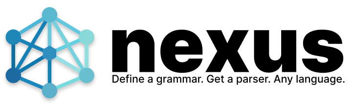

One grammar file in. One standalone Zig module out: a DFA lexer, an LALR(1) parser, and a verified semantic layer.
Write one grammar file: the tokens as regular expressions, the syntax
as LALR(1) rules, and next to each rule the tree it builds. When the
language needs layout or keyword classification, add a Zig lang
module. Nexus writes one Zig module you can vendor: a DFA lexer, an
LALR(1) parser and, with @schema, a verified semantic
layer. No runtime library, no allocation while lexing, the same bytes
on every run.
A calculator with let statements: a schema for its tree,
comments kept aside as trivia, and an operator-precedence chain. The
same grammar is the tour in the README, where the test suite
generates, compiles and runs it.
@lexer tokens ident, number, let eq, plus, minus, star, slash, lparen, rparen newline, comment, eof, err '#' [^\n]* → comment '\n' → newline '=' → eq '+' → plus '-' → minus '*' → star '/' → slash '(' → lparen ')' → rparen [0-9]+ → number "let" → let [a-zA-Z_][a-zA-Z0-9_]* → ident . → err @parser @schema program ...stmts let name:leaf value "+", "-" left right "*", "/" left right neg value num value:leaf var name:leaf @trivia COMMENT program! = stmts → (program ...1) stmts = stmt → (1) | stmts NEWLINE stmt → (...1 3) | stmts NEWLINE → 1 stmt = LET name:IDENT "=" value:expr → (let) | expr expr = @infix atom = NUMBER → (num 1) | IDENT → (var 1) | "-" value:atom → (neg) | "(" expr ")" → 2 @infix atom "+" left, "-" left "*" left, "/" left
$ nexus calc.grammar src/parser.zig
Reading grammar from calc.grammar
Lexer: 14 tokens, 13 rules, 16 DFA states
Parser: 5 rules, 1 start symbols
Generated: 23 symbols, 18 rules, 31 states
Generated: src/parser.zig
The input let x = 1 + 2 * 3 # seven parses to
(let `x` (+ (num `1`) (* (num `2`) (num `3`)))), and a
compiler reads it by role (ir.Let.value(node)), with a
source span for every node. Had an action built a node the schema
does not allow, generation would have failed with
file:line:col: error: naming the rule.
With @schema, every node kind has named, typed roles. Generation proves every rule builds nodes of the declared shape and generates the accessors.
Patterns compile to one minimized DFA, emitted as direct-coded Zig with guards, trailing context, zero-width tokens and SIMD scans. Tokens are 8 bytes and zero-copy.
Every remaining LALR(1) conflict is declared in @conflicts with a reason. Any change fails generation and prints the manifest ready to paste.
Syntax errors name what was expected, trivia keeps its positions, and parseTolerant repairs a broken buffer from a generated table.
A dead lexer rule, an unreachable rule or a value an action drops is a located error, and nothing is written.
Nexus parses its grammar files with a parser it generates from its own schema-mode grammar.
Rig, MUMPS (the language of VistA: pattern mode, dot levels, context-sensitive commands), a Ruby subset, Zag, Slash, Nexis (a Clojure reader) and Nexus's own grammar files: each grammar generates, compiles and parses its cases in the test suite. The README's table gives their sizes, states and declared conflicts.